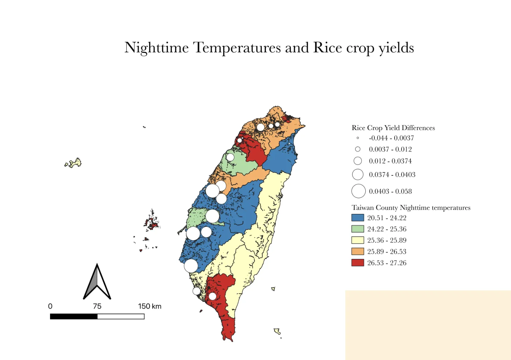
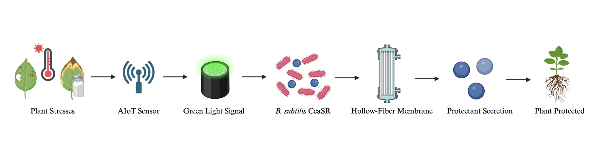
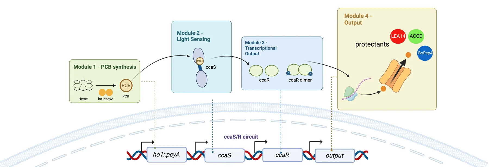
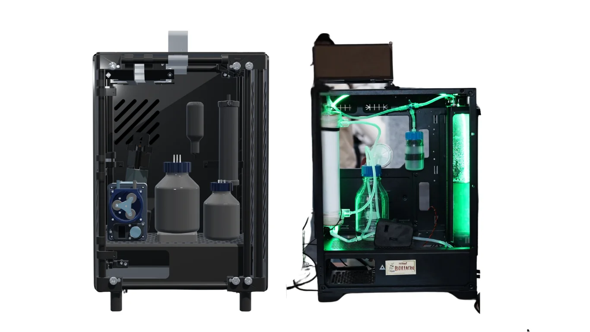
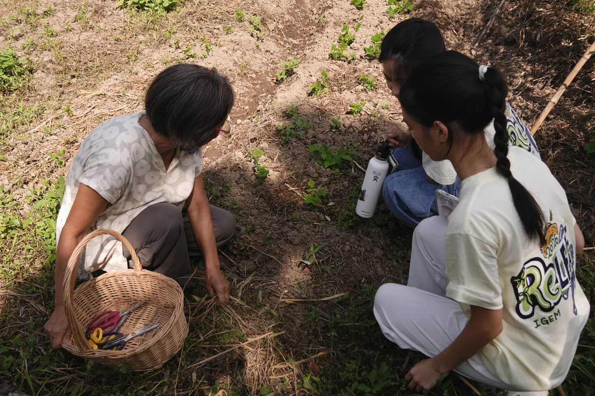
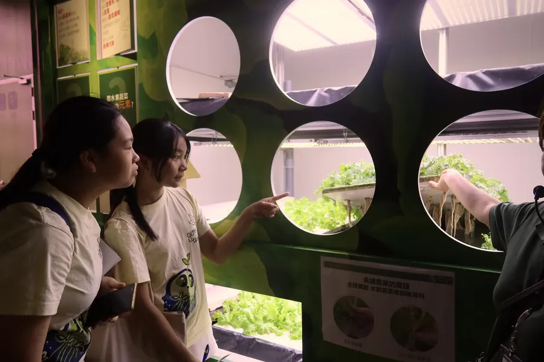
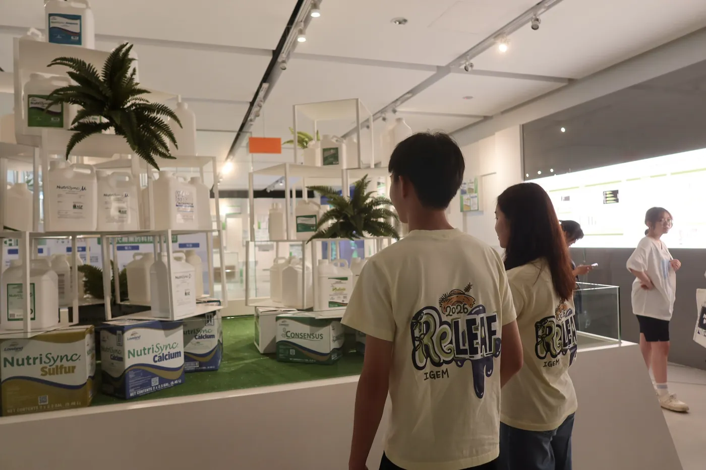
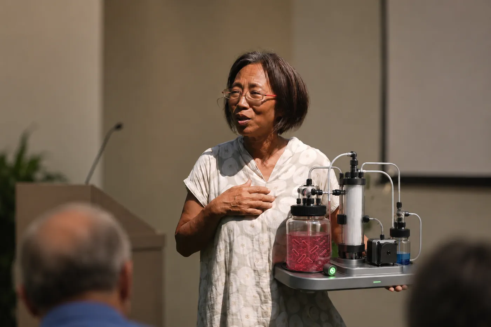
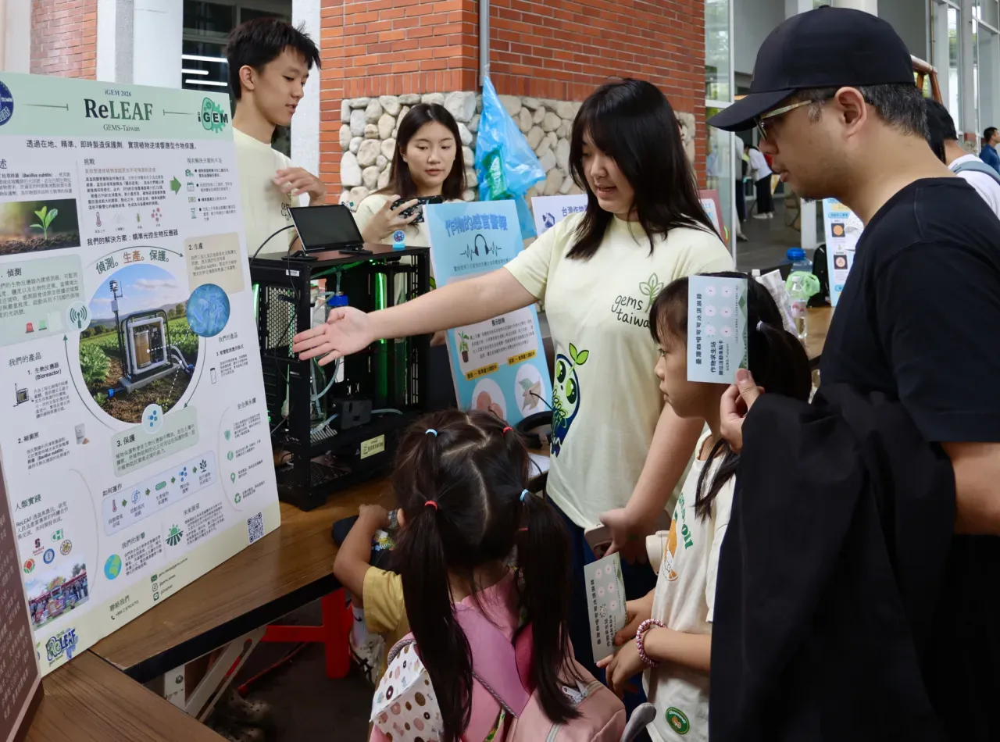

Abstract
Heat and salinity increasingly threaten agricultural productivity, but biological protectants remain difficult to manufacture, store, and deliver affordably.
ReLEAF detects environmental stress through electronic sensors and activates engineered B. subtilis using green light. The bacteria produce plant-protective molecules inside a hollow-fiber bioreactor, which releases the protectants while retaining the engineered cells. This creates a contained and responsive system designed to make plant protection more accessible to small-scale farmers.
The Challenge
Climate Stress
Climate change is placing increasing pressure on agriculture. Rising temperatures, soil salinization, drought, and disease threaten crop productivity. To understand its effects, we mapped environmental and agricultural data across Taiwan.

Our analysis showed that temperature, salinity, and climate volatility vary considerably between regions. A farmer does not experience a national average; they experience the moment when conditions in their particular field cross a damaging threshold. Climate stress is local, so solutions must respond locally.
Gaps in Biological Solutions
Biofertilizers, biostimulants, and bioprotectants offer promising alternatives to conventional agrochemicals, but they remain difficult to deliver affordably and reliably. These products are typically manufactured at centralized facilities, purified and formulated for stability, transported to farms, and stored under appropriate conditions. Each step adds time and cost, while farmers may still struggle to determine when the protectants should be applied.
Where it Matters
Large commercial farms may have the financial resources, specialized equipment, and labor needed to manage these challenges. Small-scale farmers, however, often have less access to monitoring technologies, storage facilities, and precise application systems. As a result, the farmers most vulnerable to localized climate stress may also face the greatest barriers to accessing biological protection.
Project Inspiration
Our original design used engineered bacteria to detect plant stress and release protectants directly into the soil. However, consultations with professors and bioprocess experts revealed challenges involving biological sensing, environmental release, and system control. Their feedback inspired us to replace bacterial sensing with electronic sensors and an AIoT model that predicts plant stress. We also developed a hollow-fiber bioreactor that releases protectants while keeping the engineered bacteria contained.
Our Solution

First, electronic sensors continuously monitor environmental conditions such as temperature and salinity. Our AIoT model analyzes these data to predict plant stress and activates a green-light signal when conditions cross a damaging threshold.

Then, green light activates the CcaSR optogenetic system in engineered Bacillus subtilis, triggering the production of ACC deaminase, LEA14, or BoPep4. Each protectant targets a different mechanism involved in heat, salinity, or biotic stress.

The engineered bacteria remain inside a hollow-fiber membrane bioreactor. The membrane allows the produced protectants to enter the delivery pathway while retaining the bacterial cells within the system.
The released protectants are delivered to plants through hydroponic circulation or soil irrigation. This allows ReLEAF to provide localized protection when stress is predicted, without releasing engineered bacteria into the environment.
Integrated Human Practice
Our project was continuously shaped by input from farmers, researchers, industry experts, and community members.
We visited local farms to understand how farmers recognize plant stress, manage their crops, and make decisions about intervention. Their feedback emphasized the need for a system that is automated, accessible, and compatible with existing farming practices.

We visited a hydroponic farm and consulted a plant-protectant company to better understand existing delivery systems and the barriers biological products face outside the laboratory. Their input helped us refine how ReLEAF could connect to hydroponic circulation, irrigation systems, and real agricultural workflows.


We then hosted a public forum that brought together farmers, company representatives, and community members to exchange perspectives and examine our bioreactor. These interactions helped us refine ReLEAF’s accessibility, safety, and real-world application.



To learn more about how stakeholder feedback shaped the development of ReLEAF, visit our Integrated Human Practices page.
Vision & Impact
ReLEAF envisions a future in which plant protection is produced closer to where it is needed. By generating protectants locally and on demand, our system could reduce farmers’ dependence on centralized manufacturing, long-distance transportation, and specialized storage.
Its modular design could also be adapted to produce other protein-based treatments and respond to a wider range of agricultural stresses. Ultimately, ReLEAF aims to make precise biological protection safer, more responsive, and more accessible—especially for small-scale farmers who are often underserved by existing agricultural technologies.